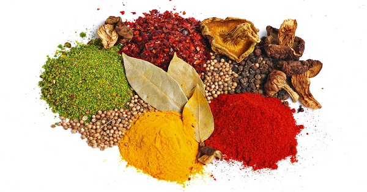

Написанию этой книги способствовал мой интерес к загадкам, которые таят в себе специи. С тонким, терпким шлейфом ароматов они будоражат воображение, переливы цветовой палитры притягивают внимание, и различные по размеру и форме специи хранят в себе свой информационный код природы, наполненный витаминами, минеральными солями, ферментами и эфирными маслами.
За эти разнообразные вкусовые качества история ведет свою летопись, в которой перекликаются сюжеты арабского владения рынком специй и его распространение на Средиземноморье. Благодаря, в том числе, торговле специями, Венеция наращивала свою мощь, как влиятельная морская держава, перехватив место первенства в торговле пряностями и специями у арабов. За монополию на рынке специй разгорелся конфликт между Голландией и Англией, который длился около 200 лет. Америка, присоединившись позже за передел рынка специй, наполнила его новыми видами пряностей и расширила производство и сбыт.
В конце концов после войн, конфликтов, свершившихся переделов рынка специй сформировались основные центры влияния: Лондон, Гамбург, Роттердам, Сингапур и Нью-Йорк. В конце 19-го века пряности выращивались, главным образом, в колониальных владениях Англии, Франции, Голландии. Крупными производителями также оставалась КНР и Мексика, а основными экспортерами специй являются Индия, Вьетнам, Индонезия и Бразилия.
В то же самое время лидером по экспорту кориандра, например, является Марокко, Египет, Австралия, Болгария, Румыния. По поставкам тмина лидируют такие страны, как Россия, Сирия, Иран. Индия, например, экспортирует в год около 230–250 000 т/год различных специй, а крупнейшим перевалочным пунктом считается Сингапур, где сырье перерабатывают и фасуют. Второй по величине экспортной державой специй является Вьетнам.
Самой важной специей, которая влияет на состояние всего рынка специй – является перец: паприка, чили, кайенский, белый, черный. Именно этот продукт определяет обороты всего рынка специй, влияет на формирование цен. На экспорт перца из Вьетнама, Индии, Малайзии и Индонезии приходится более 180 000 т/год.
Самыми дорогими специями являются шафран, кардамон и натуральная ваниль.
Не правда ли, богатая страновая история пряностей и специй, которая предопределила формирование традиций и культуру многих стран, повлияла на развитие пищевой промышленности, медицины, науки и др.?
В воспроизводственном процессе рынка специй участвуют миллионы людей, формируя устойчивый рынок труда. Миллиарды долларов вращаются между производителями и конечными потребителями специй, делая данный сегмент рынка инвестиционно-привлекательным.
И я, как конечный потребитель специй, решила для Вас, уважаемые читатели, написать про свои любимые 25 специй с одновременным путешествием в те страны, родиной которой они являются, либо в те страны, где специи производятся в промышленных масштабах.
Написанное и осмысленное мною о свойствах и разнообразии специй открывает мир, полный знаний истории, культуры, традиций, здорового образа жизни и манящих путешествий туда, где специи являются неотъемлемой частью образа жизни человека.
Я хочу поблагодарить Вселенную и Бога за внимание на то богатство природы, которое открыло для меня новый мир – мир специй, а вместе с ним его многообразие, богатство и неограниченность познания.